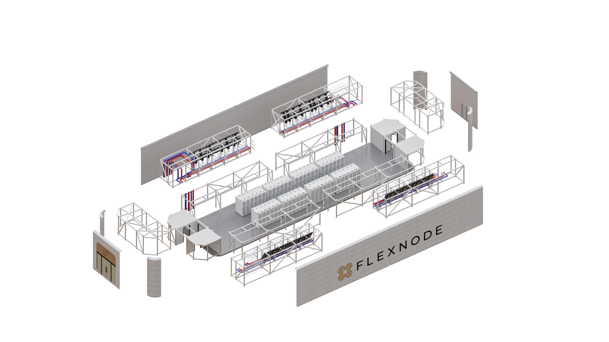
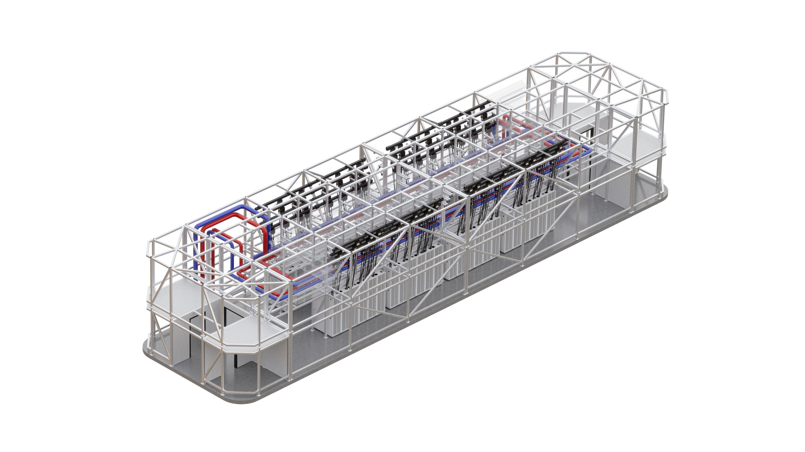
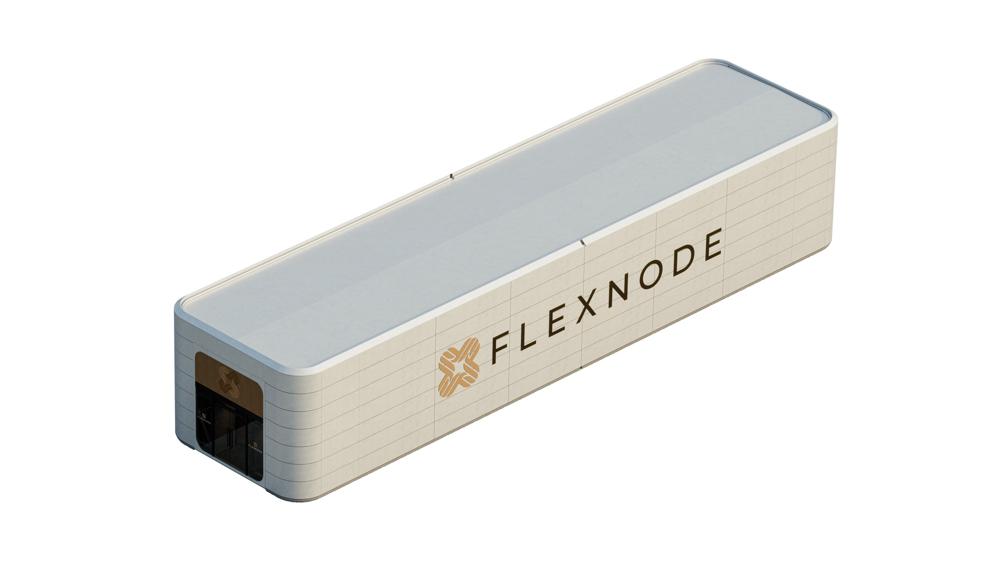

The NX platform
One building system. Four configurations.
NX is a permanent, liquid-cooling-ready AI data center building assembled from repeatable factory-built subassemblies. The interfaces hold constant. The site response does not.
Structure, envelope and service life of a building.
Engineered to the local code with a rated enclosure, fire and life safety, and a maintainable interior. Not a welded appliance on a pad.
Subassemblies produced and tested before they ship.
Repeatable production rules, one documentation set and quality control that happens under a roof rather than in weather.
Configured for climate, code, equipment and access.
The same kit answers a Denver lot, a Chicago industrial edge and a Gulf coast parcel without going back to bespoke design.
| Configuration | NX-1 | NX-2 | NX-3 | NX-4 |
|---|---|---|---|---|
| Critical IT | 4.5 MW | 9.0 MW | 13.5 MW | 18.0 MW |
| Buildings | 1 | 2 | 3 | 4 |
| Indicative area, linear | 1.26 ac3.57 MW / acre | 2.52 ac3.57 MW / acre | 3.78 ac3.57 MW / acre | 5.04 ac3.57 MW / acre |
| Indicative area, compressed | 0.95 ac4.76 MW / acre | 1.89 ac4.76 MW / acre | 2.84 ac4.76 MW / acre | 3.78 ac4.76 MW / acre |
| Thermal envelope | Air-assisted to direct liquid. Planning envelope 30 to 130+ kW per rack by configuration. | |||
| Typical use | Metro edge, first phaseSingle service | Regional inferenceThe common 10 MW answer | Phased against a rampUtility upgrade aligned | Campus scaleRoom to extend |
| Expansion path | Add buildings on the same yard and interface set. Capacity is added, the platform is not replaced. | |||
Area and density figures are planning values. The stated boundary includes building, equipment yard, service clearance and internal access. It excludes substation, setbacks and stormwater. Pending engineering approval.
The facility is the server.
Past roughly 40 kW a rack, thermal design, power topology, structure and code compliance stop behaving like separate disciplines. NX coordinates them as one facility requirement rather than four drawings that meet on site.



Compute environment
Rack pitch, aisle containment, network pathway and service access are set against the hardware roadmap rather than a generic white space.
Power and cooling
Utility interface, switchgear, distribution and heat rejection are integrated in the factory and tested before the modules leave it.
Building and site
Structure, envelope, fire and life safety, acoustics and circulation are engineered to the jurisdiction the project actually sits in.
Adapt where conditions change. Standardize where repetition pays.
Every project that redesigns its own interfaces pays for that twice: once in engineering, once in the field. NX draws the line explicitly.
Configured per project
- Site layout and phasingParcel geometry, access, construction sequence and what gets built in which tranche.
- Climate responseHeat rejection strategy, envelope performance and freeze or dust protection.
- Equipment selectionQualified alternates for switchgear, cooling and generation against availability.
- RedundancyElectrical and mechanical topology set against the workload and the SLA.
- Facade and landscapeMaterials, screening and planting that answer the local approval context.
Held constant
- InterfacesStructural, electrical, mechanical and data connections between subassemblies.
- DocumentationOne drawing set, one submittal logic, one as-built structure across every project.
- Production rulesWhat the factory builds, in what order, to what tolerance.
- Quality controlInspection and factory acceptance testing before anything ships.
- Commissioning logicThe script that takes a building from energized to accepted.
Keep the building. Change the technology inside it.
Compute roadmaps move in eighteen-month steps. Buildings do not. NX separates the long-life shell from the equipment that turns over, so a refresh is a scoped retrofit rather than a demolition argument.
- Phase 01
- Initial configurationBuilt to the current hardware envelope
- Phase 02
- Technology refreshRacks, cooling loop and distribution
- Phase 03
- Capacity extensionAdded buildings on the same yard
Service life and retrofit scope are engineering claims. Figures are published per configuration once reviewed.